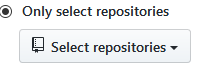
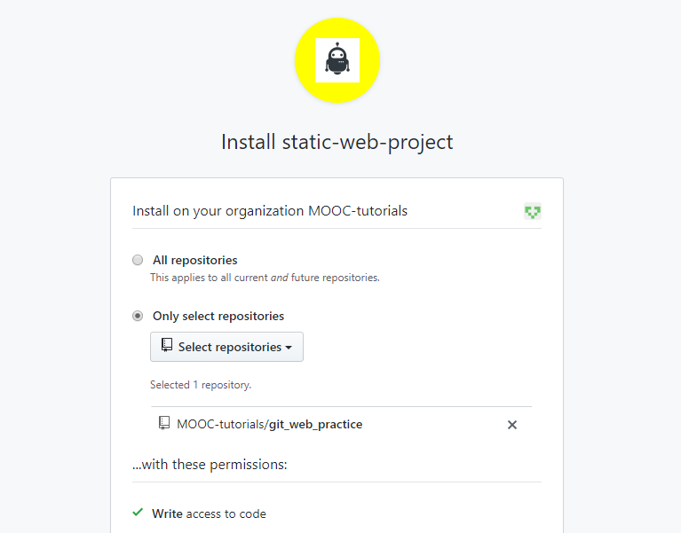

En este proyecto vamos a practicar la corrección y gestión de aceptación de cambios en un repositorio que contiene un sitio web estático. La tarea consiste en realizar el mantenimiento de un repositorio incluyendo la aceptación de peticiones de validación (pull requests) para la corrección de una página web estática. Igualmente, parte del trabajo a realizar es ayudar en la corrección del sitio que presenta múltiples errores. Es prioridad del equipo lograr corregirlos.
El código se encuentra disponible en Github y a continuación se explica brevemente la configuración del ambiente de desarrollo necesaria para poder comenzar a trabajar. Posteriormente se explica la dinámica de trabajo sobre el repositorio y lo que se espera realizar en conjunto con el equipo automático.
Antes de comenzar
- Asegúrese de tener una cuenta en Github y tener la sesión iniciada.
- Asegurese de tener Git instalado.
- Se recomienda usar algún editor de archivos con manejo de sintaxis. Una opción recomendada es usar Visual Studio Code.
Primeros pasos
- Ir a https://github.com/MOOC-tutorials/git_web_practice_pr
- Dar clic sobre el botón de

- Confirmar que ahora tenga dentro de su cuenta un nuevo repositorio con el sitio web estático base con el nombre git_web_practice_pr
Clonando el repositorio
- En su repositorio git_web_practice_pr en Github, hacer clic en
- Copiar la URL dada. Puede usar el botón
 (este botón copiará en su portapapeles la URL que se necesita).
(este botón copiará en su portapapeles la URL que se necesita). - En su terminal/consola ubicarse en el directorio en que desea que se clone el repositorio usando el comando
cd. - En su terminal/consola escribir
git clone <URL del repositorio>. - Cambiar el directorio activo (
cd) a la carpeta raíz del repositorio. Ejecutandocd git_web_practice_prdebería bastar.
Configuración de permisos al equipo de trabajo automático para crear peticiones de validación (Pull Requests)
- Instalar la Github App disponible en https://github.com/apps/static-web-project
- Clic en
- Seleccionar su cuenta (donde fue creado el repositorio git_web_practice_pr)
- Seleccionar, hacer clic sobrey seleccionar el repositorio git_web_practice_pr. Clic en
Ahora, debería observar una pantalla como la siguiente:

En este momento debería de contar con una copia local del repositorio con el código de la página web estática. Partiendo de esto ahora podrá hacer los cambios necesarios para corregir los errores. La idea general es arreglar este sitio teniendo en cuenta las instrucciones que irán apareciendo en la sección de issues en el repositorio en Github. Por cada arreglo especificado es necesario hacer un commit. Además, luego de cada commit, debe subir sus cambios locales mediante un push al repositorio remoto. Es importante tener en cuenta que al mismo tiempo que correcciones se realizan, el equipo automático también propondrá cambios para la corrección de errores.
Instrucciones sobre los errores a corregir y la aceptación de peticiones de validación de cambios
Podrá ir observando los elementos a corregir en el repositorio en Github (aparecerán dentro de los issues asignados con el tag bug). Para empezar a trabajar, es necesario dirigirse a la sección de issues de su repositorio. Allí encontrará el error primer error asignado a corregir. Por otro lado, los miembros del equipo automático crearán peticiones de validación para contribuir con la corrección del sitio web estático a medida que se realicen las correcciones.
En general, a partir de este momento cualquier información o acción a realizar sobre el repositorio será reportada mediante un issue en la sección correspondiente en Github del repositorio.